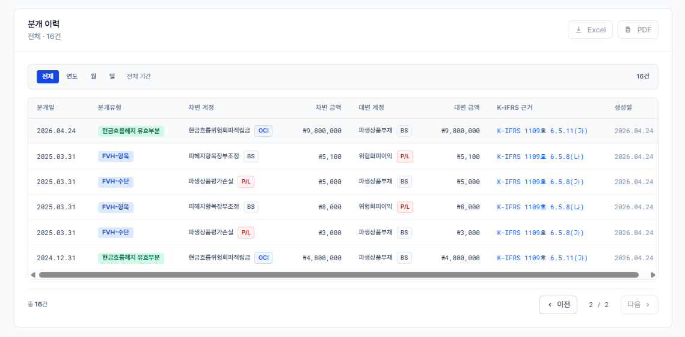

Spring Boot와 React 기반으로 위험회피회계 평가, 지정, 검증, 자동 분개 흐름을 구현한 개발 산출물입니다.
adapter · application · domain
BigDecimal · Append-only · Test
개발문서는 코드와 실행 결과를 함께 확인할 수 있어야 합니다. 아래 세 링크를 먼저 열어두면, 이후의 아키텍처와 검증 설명을 실제 화면과 대조할 수 있습니다.
심사자가 직접 평가, 지정, 유효성 테스트, 자동 분개 조회를 실행하는 공개 배포 화면입니다.
소스코드, 테스트, 배포 설정, 제출용 PDF 문서를 포함한 공개 저장소입니다.
Render에 배포된 백엔드 API의 상태 확인 엔드포인트입니다.
기술 선택 기준은 회계 금액 계산의 안정성, 트랜잭션 정합성, 공개 데모 배포 속도였습니다. 비교 대상은 실제로 이 프로젝트에서 선택지가 될 수 있는 기술만 남겼습니다.
| 영역 | 선택 | 비교한 대안과 판단 |
|---|---|---|
| Frontend | React + Vite + TypeScript | Next.js는 서버 렌더링과 풀스택 라우팅이 필요할 때 강합니다. 이 프로젝트는 로그인/SEO보다 단계형 업무 화면과 빠른 반복 개발이 중요해 SPA 구성이 더 단순했습니다. 순수 HTML/JS는 초기 구현은 빠르지만 폼 상태, API 응답 타입, 분개 유형 같은 값 관리가 약합니다. |
| Backend | Spring Boot + Java | Node/NestJS는 프런트와 언어를 맞출 수 있고 FastAPI는 빠른 API 작성에 좋습니다. 다만 금융권 과제에서는 트랜잭션, Bean Validation, JPA, BigDecimal 계산, 계층형 패키지 구조를 명확히 보여주는 Java/Spring 조합이 더 설득력 있다고 판단했습니다. |
| Persistence | JPA | MyBatis/raw SQL은 복잡한 리포트 쿼리에 유리합니다. 이번 범위는 엔티티 관계, 저장, 조회, 트랜잭션 경계가 핵심이어서 JPA가 더 적합했습니다. 단, 운영 리포팅이 커지면 조회 전용 SQL을 분리하는 것이 낫습니다. |
| Database | PostgreSQL | MySQL/MariaDB도 충분히 가능한 선택입니다. PostgreSQL은 제약조건, 트랜잭션, 날짜/숫자 타입, 분석성 SQL에서 강점이 있어 평가 이력과 분개 이력을 다루기 좋았습니다. Oracle/SQL Server는 금융권 운영 DB로 강하지만 개인 포트폴리오 배포 비용과 설정 부담이 큽니다. MongoDB는 문서 저장에는 편하지만 회계 분개처럼 관계와 정합성이 중요한 데이터에는 맞지 않습니다. |
| AI Workflow | RAG + Claude + Codex | 일반 챗봇 답변만 쓰지 않고, K-IFRS 문서와 정리 문서를 근거로 요구사항 정의, 구현, 검증을 반복했습니다. AI는 제품 기능이 아니라 개발 과정의 회계 검토와 코드 검증을 빠르게 돌리기 위한 도구로 사용했습니다. |
헤지관계, 평가, 유효성 테스트, 분개는 모두 서로 참조됩니다. 그래서 NoSQL보다 관계형 DB가 맞고, 비용과 설정 부담까지 고려해 PostgreSQL을 사용했습니다.
Frontend: https://hedge-accounting-prototype.vercel.app
Backend Health: https://hedge-backend-l1vx.onrender.com/api/health
GitHub: https://github.com/BigJins/hedge-accounting-prototype
React/Vite 기반 UI가 계약 등록, 평가 실행, 헤지 지정, 유효성 테스트, 자동 분개 조회를 단계별로 제공합니다.
Spring Boot API가 공정가치 평가, 헤지 지정, 유효성 테스트, 자동 분개 생성을 담당합니다.
| 계층 | 책임 | 대표 구성요소 |
|---|---|---|
| adapter | HTTP 요청/응답, DTO 변환 | HedgeDesignationController |
| application | 유스케이스 오케스트레이션과 트랜잭션 경계 | EffectivenessTestService |
| domain | 금융 계산, 회계 분개, 도메인 규칙 | DollarOffsetCalculator, JournalGenerator |
| repository | JPA 기반 영속성 | HedgeRelationshipRepository |
IRP 기반 이론 선물환율, 할인계수, 공정가치 변동을 계산합니다.
IRS 평가손익과 고정금리채권 장부조정을 K-IFRS 6.5.8 흐름으로 처리합니다.
경제적 관계와 참고 범위를 분리해 PASS/WARNING/FAIL을 판정합니다.
| 엔진 | 구현 내용 | 근거 |
|---|---|---|
| FX Forward 평가 | 이론 선물환율, 현가계수, 공정가치 계산 | K-IFRS 1113 Level 2 |
| CFH Lower of Test | 유효분 OCI, 비효과분 P/L 분리 | K-IFRS 1109 6.5.11 |
| IRS FVH 분개 | 수단 평가손익과 피헤지항목 장부조정 | K-IFRS 1109 6.5.8 |
| IRS FVH 상각 | 장부금액 조정 잔액의 후속 상각 | K-IFRS 1109 6.5.9 |
| 업무 | 대표 API | 화면 |
|---|---|---|
| FX Forward 평가 | POST /api/v1/valuations/fx-forward | 공정가치 평가 |
| IRS 평가 | POST /api/irs/valuate | 공정가치 평가 - IRS 탭 |
| 헤지 지정 | POST /api/v1/hedge-relationships | 헤지 지정 |
| 유효성 테스트 | POST /api/v1/effectiveness-tests | 유효성 테스트 |
| 자동 분개 | GET /api/v1/journal-entries | 자동 분개 |
| IRS 상각 | POST /api/v1/journal-entries/irs-fvh-amortization | 자동 분개 - IRS 상각 카드 |

OCI, P/L, BS 계정을 색상 태그로 구분합니다.
분개 행에 K-IFRS 조항을 함께 표시합니다.
Excel/PDF 출력 버튼을 제공합니다.
| 구성요소 | 역할 | 검증 포인트 |
|---|---|---|
| EffectivenessTestService | Dollar-offset, CFH Lower of Test, PASS/WARNING/FAIL 판정 | 0/0 차단, IRS 분기 |
| HedgeDesignationService | 헤지 관계 지정, 적격성 검증, 중단 처리 | 중복 지정, 조합 검증 |
| JournalEntryService | FVH/CFH/IRS FVH 분개 생성 및 조회 | 분개 균형, 타입 라우팅 |
| IrsFvhAmortizationJournalGenerator | K-IFRS 6.5.9 장부조정상각 분개 생성 | 부호별 차대변 방향 |
| HedgeDesignationForm | FX Forward/IRS 지정 UI와 입력 검증 | 위험 유형 자동화 |
| JournalEntryHistory | 자동 분개 이력 표시 | OCI/P&L 태그, K-IFRS 근거 |